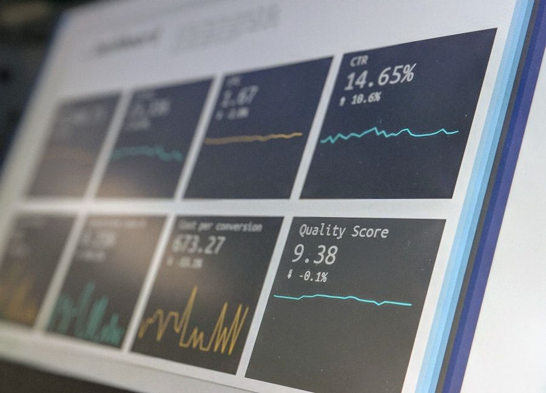

In an era saturated with algorithmic feeds, machine learning models, clinical trials telemetry, and probabilistic polling forecasts, statistical literacy is no longer merely a specialized sub-branch of mathematics; it is an indispensable prerequisite for responsible citizenship and scientific reasoning. Yet historical high school mathematics curricula have treated statistics as an afterthought—a mechanical parade of mean, median, mode, and standard deviation formulas memorized for exams and forgotten immediately thereafter. Crucially, conventional school curricula almost completely ignore Bayesian probabilistic reasoning, leaving even advanced secondary scholars vulnerable to classic cognitive fallacies such as base rate neglect, the prosecutor's fallacy, and false positive inversion.
Bayesian reasoning provides the mathematical formalization of epistemic rationality: how should rational observers update their belief in a hypothesis upon observing new, imperfect empirical evidence? Thomas Bayes' celebrated theorem—P(H|E) = [P(E|H) · P(H)] / P(E)—captures this dynamic interplay between prior probability, diagnostic likelihood, and posterior probability. When taught through dry algebraic formulas alone, students struggle to grasp the theorem's intuitive power. However, when grounded in natural frequency trees and spatial area grids, secondary scholars effortlessly master conditional probabilistic reasoning.
| Cognitive Statistical Fallacy | Intuitive Erroneous Intuition | Mathematical Reality | NumeracyBoost Pedagogical Remedy |
|---|---|---|---|
| Base Rate Fallacy | Ignoring population disease prevalence in test accuracy | P(Disease|Positive) is low when base rate is rare | Natural frequency 1,000-person icon array grids |
| Gambler's Fallacy | Assuming independent coin flips 'are due' to reverse | P(Heads) = 0.5 regardless of prior consecutive flips | Monte Carlo computational simulation experiments |
| Correlation = Causation | Conflating statistical co-occurrence with direct causation | Confounding latent variables govern spurious correlations | Directed acyclic graphs (DAGs) & causal path analysis |
| P-Value Misinterpretation | Treating p < 0.05 as proof that hypothesis is true | P-value is probability of data under null hypothesis | Effect size confidence intervals & Bayes factors |
| Law of Small Numbers | Overestimating representativeness of small sample sizes | Small samples exhibit extreme variance by chance | Interactive sample-size variance sliders |
Consider the classic medical diagnostic paradox used in our secondary data science seminars. Suppose a rare disease affects 1 in 1,000 individuals in a general population. A diagnostic clinical test boasts a 99% true positive rate (sensitivity) and a 95% true negative rate (specificity). If a randomly selected individual tests positive, what is the probability that they actually carry the disease? Untrained students—and disturbingly, an overwhelming majority of practicing physicians—instinctively answer 'around 95% to 99%'. In reality, as a natural frequency tree instantly demonstrates, out of 1,000 individuals, 1 has the disease (and tests positive), while 999 do not have the disease, of whom approximately 50 receive false positive results. The true probability that a positive test indicates actual illness is a modest 1 in 51—less than 2%.
When secondary students master natural frequency representations, their quantitative discernment undergoes a profound maturation. They learn to question headline statistics critically, assess the statistical power of clinical trials, and understand why screening rare phenomena invariably yields substantial proportions of false alarms. This epistemic skepticism forms the bedrock of genuine scientific inquiry and data literacy.

Furthermore, our statistical curriculum bridges pure mathematics and modern computing through accessible Python and R data visualization workshops. Rather than performing tedious hand calculations of variance across five numbers, students import authentic climate datasets, epidemiological records, and financial indices containing tens of thousands of data points. They write simple algorithmic scripts to calculate rolling moving averages, generate bootstrapping distributions, and fit robust nonlinear regression curves. Mathematics ceases to be a sterile textbook ritual and transforms into a vibrant computational telescope for investigating complex real-world phenomena.
Feedback from university admissions directors and STEM faculty indicates that secondary scholars trained in Bayesian statistical reasoning and computational data analysis demonstrate exceptional academic readiness for collegiate research. By cultivating a nuanced understanding of stochastic uncertainty, signal-to-noise ratios, and empirical evidence evaluation, NumeracyBoost prepares young scholars to thrive in an increasingly data-driven global intellectual economy.
Epistemic Rationality and the Mathematics of Evidence Accumulation
The philosophical significance of Bayesian probability extends far beyond classroom textbook exercises; it provides a formal mathematical grammar for understanding scientific progress itself. In the classical Popperian view, scientific hypotheses can only be falsified, never verified. In the modern Bayesian epistemological framework, scientific inquiry represents a continuous, iterative process of probability density updating: every empirical observation, clinical experiment, or astronomical measurement shifts the probability distribution across competing theoretical models.
Teaching secondary students to view evidence through a Bayesian lens cultivates profound intellectual humility and epistemic resilience. Students learn that absolute 100% certainty is virtually nonexistent in empirical science; instead, rational belief is measured in degrees of probabilistic confidence. When confronted with surprising or counter-intuitive data, a student trained in Bayesian reasoning does not reflexively abandon their core scientific model, nor do they dogmatically dismiss the anomaly; they systematically calculate how strongly the new evidence ought to shift their prior probability distribution.
Computational Simulations: Bringing Monte Carlo Methods to High School Math
To deepen probabilistic intuition without getting bogged down in complex combinatoric integration formulas, our curriculum integrates hands-on computational Monte Carlo simulation workshops. Students write straightforward, readable Python programs that simulate millions of random trials—such as repeatedly running the Monty Hall three-door paradox, simulating multi-generational genetic drift, or modeling stock market random walks.
When students write code to simulate the Monty Hall problem ten thousand times and watch the winning percentage converge asymptotically to 66.7% for the switching strategy, theoretical debates vanish in the face of unmistakable empirical evidence. By combining statistical theory with computational experimentation, secondary scholars develop an unshakable, visceral grasp of probability distributions, law of large numbers convergence, and stochastic modeling that serves as an elite springboard for collegiate computer science, machine learning, and quantitative finance.
Pedagogical Implications & Practical Next Steps
Educational research confirms that early diagnostic assessment followed by structured cognitive intervention transforms mathematical trajectory. Educators and parents can evaluate their student's quantitative baseline through our comprehensive diagnostic testing suite.
Schedule Student Diagnostic Assessment